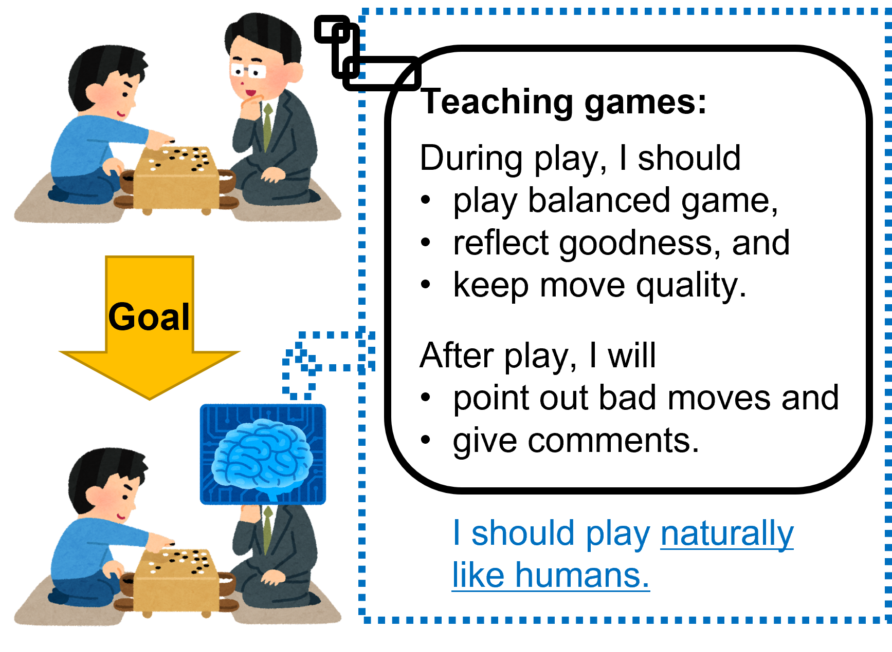
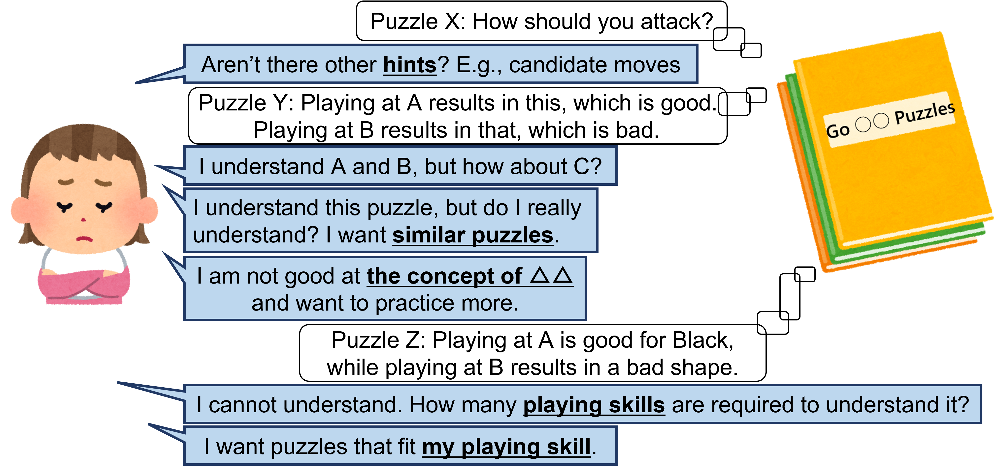

Games have long been a part of human entertainment and one of the key fields of AI research.
In many games, AI players have become stronger than top human players.
While powerful and general AI methods are actively studied, researchers also focus on making AI more accessible to humans as society moves toward Society 5.0.
We work on these two directions of AI research in games.
* We do not conduct research on designing games.
In the following, the two directions are briefly introduced.
For more details, please refer to the published papers.
We work on creating strong AI players using tree search and reinforcement learning (especially AlphaZero).
We have achieved good results in game competitions.
We are also interested in finding out optimal strategies and theoretical values of games (so-called game solving).
A simple example is that if both players play optimally in tic-tac-toe, the game ends in a draw.
We aim to let AI perform teaching games, one of the methods used by human teachers to teach Go (figure below).
To achieve this, we research on playing human-like moves, playing good-quality games, and pointing out bad moves.
Another goal is to generate explanations or comments on the game states or moves.

Game content refers to various things: maps, music, characters, weapons, puzzles, etc.
We work on automatic generation of content that is fun to play or becomes good practice.
Examples include the generation of mazes that guide human players, puzzles to practice the T-spin technique in Tetris, and puzzles for Go beginners and intermediate players (motivations in figure below).
